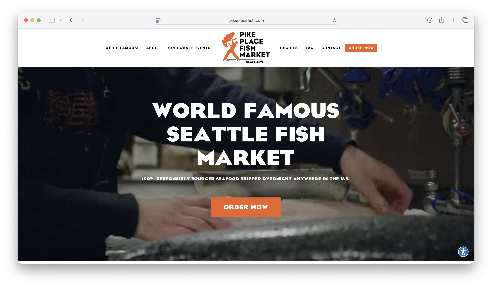
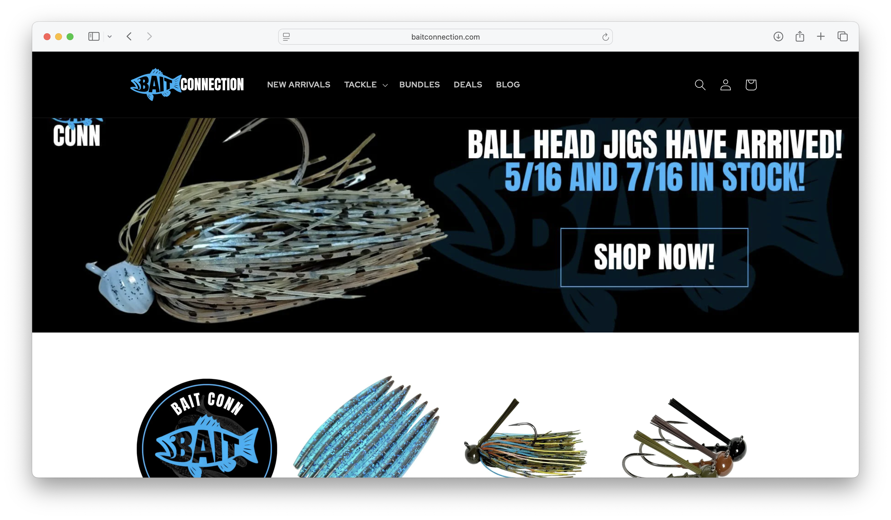
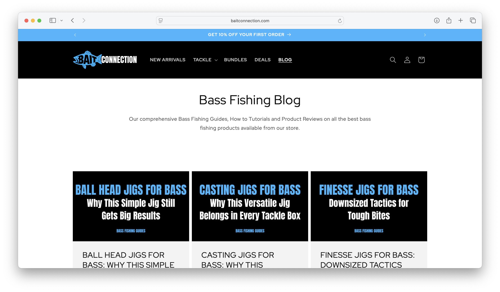
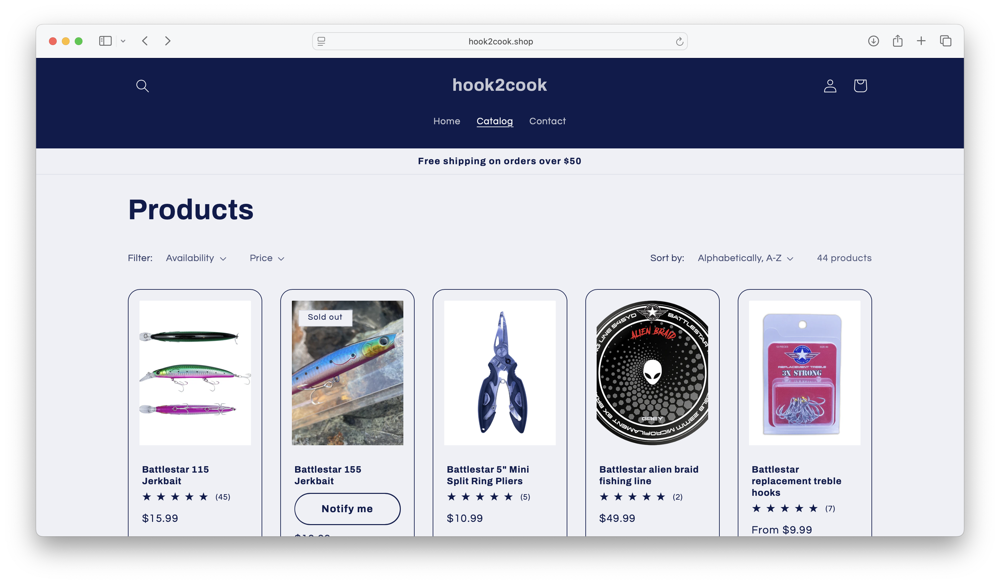
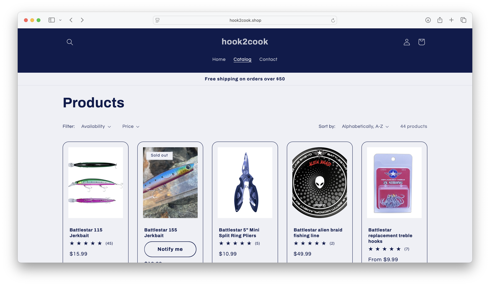

Final project proposal
Introduction
Hank's Bait and Tackle
a locally owned coastal fishing supply store serving recreational and serious anglers along the Pacific coast. Located just minutes from the harbor, the shop specializes in saltwater rods, reels, tackle, live bait, and essential gear for inshore and offshore fishing.
Target audience
The primary users of the Hank’s Bait & Tackle website are anglers of all backgrounds preparing for a fishing trip or simply wanting to learn more.
Quickly check store hours before early morning launches Confirm availability of live bait Browse rods, reels, and tackle options Compare prices before visiting the store See what species are currently biting Get directions to the shop near the harbor Their main goal is efficiency. Most customers are preparing for a fishing trip and want fast access to reliable information so they can get on the water without delays.
Comparative analysis
Pike Place Fish

Bait Connection
 Hook2Cook Shop
 

Website content
About
[photo of Hank Eide standing on Morro Bay pier at sunrise with fishing boats in the background]
Hank’s Bait & Tackle is a locally owned fishing supply shop serving the Central Coast of California. Owner Hank Eide grew up fishing the piers of Morro Bay and the surf along Avila Beach, learning early on that preparation makes the difference between a slow day and a successful one. After years of fishing local waters and working alongside charter crews, Hank opened the shop to create a dependable place where anglers could find quality gear, fresh bait, and honest advice. He built the store around what Central Coast fishermen actually need, equipment that handles cold Pacific waters, rocky structure, and strong currents.
[wooden display table inside the shop with neatly arranged swimbaits, jigs, and spools of braided line]
We carry rods and reels designed for rockfish, halibut, lingcod, and striped bass, along with terminal tackle, braided line, surf rigs, and daily live bait. Our inventory reflects the seasons and the conditions, because fishing on the Central Coast changes throughout the year. More than just a store, Hank’s is part of the local fishing community. It’s a place where anglers stop in before sunrise to grab bait, check the latest bite reports, and talk about what’s working offshore or along the jetty.
[close-up of hands tying a leader knot with the Pacific shoreline in the background]
At Hank’s Bait & Tackle, our goal is simple: help you head out prepared and confident, whether you’re casting from the beach, launching from the harbor, or chasing fish beyond the kelp beds.
Home
Hank’s Bait & Tackle Central Coast Saltwater Gear & Live Bait Your local stop for rods, reels, tackle, and fresh bait — just steps from the harbor.
[sunrise over Morro Bay harbor with fishing boats heading out]
What We Carry
[inertior wall lined with product]
Hank’s Bait & Tackle stocks dependable gear built for Central Coast conditions — cold Pacific water, rocky structure, and strong currents. We carry: Saltwater rods & reels Surf fishing gear Braided and monofilament line Swimbaits, jigs & terminal tackle Live anchovies and shrimp (delivered daily) Ice, coolers & fishing essentials Everything you need before heading offshore, into the bay, or casting from the surf.
Store Hours
[storefront of Hank’s Bait & Tackle with marina in background]
Monday – Friday: 5:00 AM – 7:00 PM Saturday – Sunday: 4:30 AM – 8:00 PM Open early for anglers launching at sunrise.
Location 125 Harbor View Drive Seaside Point, CA 93955 Located across from Seaside Marina with free parking directly in front of the shop.
Daily Bite Report
[early morning fog lifting over Morro Bay with boats heading out]
Central Coast Fishing Update Last Updated: February 15, 2026 – 4:30 AM Fishing conditions on the Central Coast continue to shift with weather and swell, but overall activity has been steady this week.
Offshore Report
[angler holding a large lingcod on the deck of a charter boat]
Rockfish & Lingcod
Fishing has been productive in 180–250 feet of water west of Morro Bay. White and chartreuse jigs have been performing well, along with heavy swimbaits near rocky structure. Lingcod have been aggressive in deeper pockets.
Inside the Bay
[fisherman casting near calm bay waters with Morro Rock in the distance]
Halibut
Halibut are showing along sandy flats inside the bay, especially during moving tides. Live anchovies and soft plastic swimbaits are producing consistent bites.
Surf & Jetty
[angler fishing from rocky jetty with waves crashing nearby]
Striped Bass & Perch
Early mornings near the jetty have seen striped bass activity on topwater lures. Surf perch are biting along sandy beaches using sand crabs and light Carolina rigs.
Bait Availability
[close-up of live anchovies in a bait tank]
Live anchovies
— In stock
Live shrimp
— Limited supply
Frozen squid & sardines
— Available
Call ahead for current availability: (650) 468 8338
Conditions
Water Temp:
54–56°F
-
Swell:
3–5 ft
Wind:
Light morning wind increasing in afternoon
Stop by before you head out for updated reports and local advice.
Shop
[wooden display table inside the shop with rods, reels, and tackle neatly arranged]
We carry dependable saltwater gear selected for Central Coast conditions — rocky structure, heavy surf, and cold Pacific water. All equipment is available in-store.
Rods & Reels
[wall lined with saltwater spinning rods and reels]
-
[product image]
Central Coast Spinning Rod
[product image]
$89.99
7-foot medium-heavy rod designed for halibut, striped bass, and rockfish. Built for long casts and strong hook sets in surf and bay conditions.
-
[product image]
Offshore Jigging Rod
$149.99
Heavy-duty rod ideal for targeting lingcod and deeper-water rockfish. Reinforced blank built for vertical jigging offshore.
-
[product image]
Saltwater Spinning Reel
$119.99
orrosion-resistant reel with smooth drag system and sealed bearings for saltwater durability.
Tackle & Line
[close-up of colorful swimbaits and metal jigs hanging on display rack]
-
[product image]
Braided Fishing Line (300 yd)
$24.99
High-strength braided line with low stretch for improved sensitivity and control in deeper water.
-
[product image]
Soft Plastic Swimbait Pack
$9.99
Realistic paddle-tail swimbaits ideal for halibut and striped bass near kelp beds and sandy flats.
-
[product image]
Heavy Metal Jig
$14.99
Vertical jig designed for rockfish and lingcod in 150–300 ft depths.
-
Terminal Tackle Starter Kit
$39.99
Includes assorted hooks, swivels, sinkers, leaders, and rigs suited for Central Coast saltwater fishing.
Live & Fresh Bait
-
[product image]
Live Anchovies (per scoop)
$10.00
Fresh, locally sourced live bait delivered daily. Ideal for halibut and striped bass.
-
[product image]
Live Shrimp (per dozen)
$8.50
Premium live shrimp for pier and bay fishing.
-
[product image]
Frozen Squid & Sardines
$6.99
Reliable frozen bait option for surf and offshore fishing.
Essentials
[insulated bait cooler sitting on dock beside fishing gear]
-
[product image]
Insulated Bait Cooler
$34.99
Keeps bait fresh and fish cold during long days on the water.
-
[product image]
5-Gallon Bait Bucket with Aerator
$29.99
Portable aerated bucket to keep live bait active and healthy.